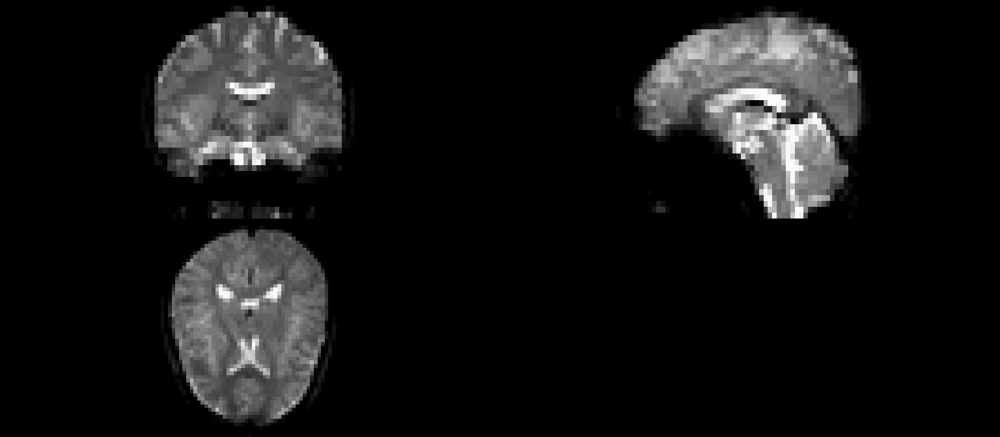
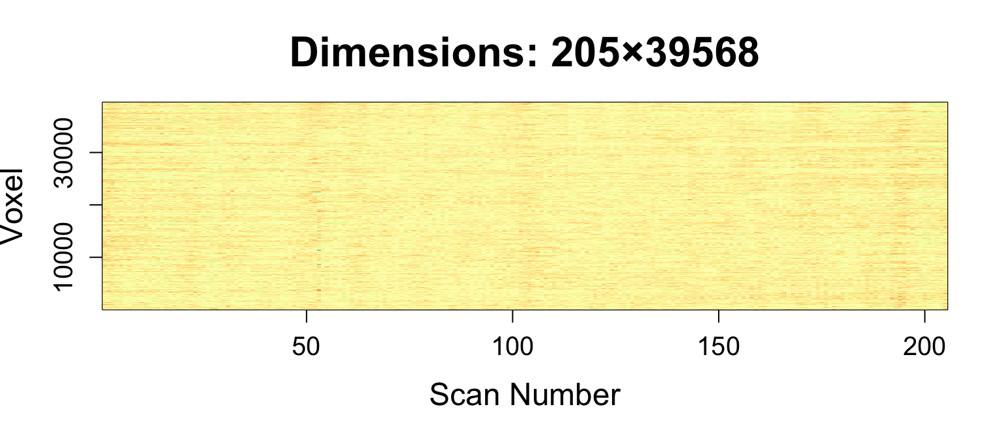
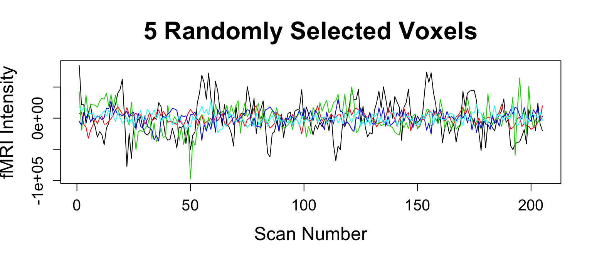

- I don't process my data
- MATLAB/SPM
- R
- Python/Nipype
- BrainVoyager/FreeSurfer/AFNI
- Other
- Stata/SAS (just kidding)
April 10, 2016
Main Software: fMRI/MRI Processing
Main Software: Statistical Analysis
- MATLAB/SPM
- R
- Python/Pandas
- SAS
- Stata/SPSS
- Other/Excel
Are these the same?
- Yes
- No
I use R
Why R?
- Statistical tools are state of the art
- SAS/Stata do not currently support imaging
- R statistical tools > MATLAB/Python (opinion)
- maybe not machine learning (scikit-learn)
- Statistics programs commonly teach it
- Packages have been developed for imaging
- Shiny
Data used from NITRC
Multi-sequence MRI dataset from Kirby 21 (https://www.nitrc.org/projects/multimodal):
- Using 2 MRI sequences: fMRI, MPRAGE
files
anatomical functional
"KKI2009-19-MPRAGE.nii.gz" "KKI2009-19-fMRI.nii.gz" oro.nifti (Brandon Whitcher, CRAN)
- Can read/write NIfTI/ANALYZE files
- Implements the
niftiobject (S4)- Use it like an array
- Includes meta data relevant to images
- Has useful plotting functions
image.nifti,orthographic


spm12r (me, CRAN)
Requires MATLAB (installs SPM to R library)
spm12_slice_timing- slices are not taken instantaneouslyspm12_realign- people movespm12_coregister- structural imaging is higher resolutionspm12_segment- where's the gray matter?spm12_normalize- brains look better in MNIspm12_smooth- turn that noise down
fslr (me, CRAN)
- Relies heavily on the
niftiobject - Wraps FSL - a popular neuroimaging suite
fslmaths- image manipulationfslstats- image statisticsfslbet- brain extraction/skull stripping
- Adds some plotting functionality
ortho2,double_ortho

fslr (me, CRAN)
fsl_slicetimer- slices are not taken instantaneouslymcflirt- people moveflirt- structural imaging is higher resolutionfast- where's the gray matter? (not that fast)flirt+fnirt- brains look better in MNIfslsmooth- turn that noise down
Number of Downloads (RStudio CRAN)
The nifti object
fslr: readnii wraps oro.nifti::readNIfTI:
library(fslr) img = readnii(files["functional"]); print(img)
NIfTI-1 format Type : nifti Data Type : 16 (FLOAT32) Bits per Pixel : 32 Slice Code : 0 (Unknown) Intent Code : 0 (None) Qform Code : 1 (Scanner_Anat) Sform Code : 0 (Unknown) Dimension : 80 x 80 x 37 x 210 Pixel Dimension : 3 x 3 x 3.97 x 1 Voxel Units : mm Time Units : Unknown
fslr: Slice Timing Correction
fsl_slicetimer will do slice timing correction
tr = 2 # 2 seconds first_scan = floor(10.0 / tr) + 1 # 10 seconds "stabilization of signal" img = subset_4d(img, first_scan:ntim(img)) aimg = fsl_slicetimer(img, tr = 2, indexing = "up", acq_order = "contiguous") print(dim(aimg))
[1] 80 80 37 205
print(voxdim(aimg))
[1] 3.000000 3.000000 3.972973
Orthographic View
library(fslr); median_image = apply(aimg, c(1, 2, 3), median) ortho2(median_image)

Image Slice View
image(median_image, z = 18, plot.type = "single")

ANTsR (Brian Avants, GitHub)
Located at https://github.com/stnava/ANTsR
- Re-implements ANTs within R using ITK/C++ (fast)
- actively maintained (sometimes lacking documentation)
- N3/N4 Inhomogeneity correction
- Image Registration
- Reads/writes data using pointers (not in memory)
- not as intuitive/not exactly array-like

extrantsr ("extra ANTsR", me, GitHub)
Located at https://github.com/muschelli2/extrantsr
- Wraps
ANTsRfunctionality- Allows
niftiobject use - Has
ants2oroconversion for ANTs images tonifti
- Allows
- Adds commonly done pipelines for neuroimaging
- I use this heavily for my imaging analyses

Motion Correction/Calculation
antsMotionCalculationcalculates motion parameters (rp)- Also the motion-corrected image
motionCorrectionResults = antsMotionCalculation( boldImage, fixed = average_image, txtype = "Rigid")
Let's Make a Matrix!
timeseries2matrix creates \(T\times V\) matrix, \(V\) voxels in mask
averageImage = getAverageOfTimeSeries(moco_img) boldMatrix = timeseries2matrix(img = moco_img, mask = averageImage > mean(averageImage)) print(dim(boldMatrix))

DVARS - RMS change in BOLD
computeDVARS does what the names says
DVARS = computeDVARS(boldMatrix) fd = motionCorrectionResults$fd

Nuisance Variables: CompCor
compcor: PCA on high-variance voxels (Behzadi et al. 2007)
- have to specify number of components
compCorNuisanceVariables = compcor(moco_img, maskImage, ncompcor = 6) nuisanceVariables = cbind(moco_params, compCorNuisanceVariables)
Nuisance Variables: CompCor Voxels
Nuisance Regression and Filtering
lm works great here for regression \(\left(\text{data is }T×V\right)\)
nuisanceVariables = scale(nuisanceVariables) nuisance_mod = lm(boldMatrix ~ nuisanceVariables) rMatrix = residuals(nuisance_mod)

Filtering the frequencies
frequencyFilterfMRIcallsmFilter::cffilter
rMatrix = frequencyFilterfMRI(rMatrix, tr = 2, freqLo = 0.01, freqHi = 0.1, opt = "trig")
Smooth Image
smoothImage- Gaussian smoothing FWHM = 6mm\(^3\)
cleanBoldImage = matrix2timeseries(boldImage, maskImage, rMatrix) smoothCleanBoldImage = smoothImage(cleanBoldImage, sigma = c(rep(6, 3), 0), FWHM = TRUE)
What Else Do We Need?
Not covered
fmripackage (ask Joerg)AnalyzeFMRIcudaBayesreg
Bibliography
Behzadi, Yashar, Khaled Restom, Joy Liau, and Thomas T Liu. 2007. “A Component Based Noise Correction Method (CompCor) for BOLD and Perfusion Based FMRI.” Neuroimage 37 (1). Elsevier: 90–101.